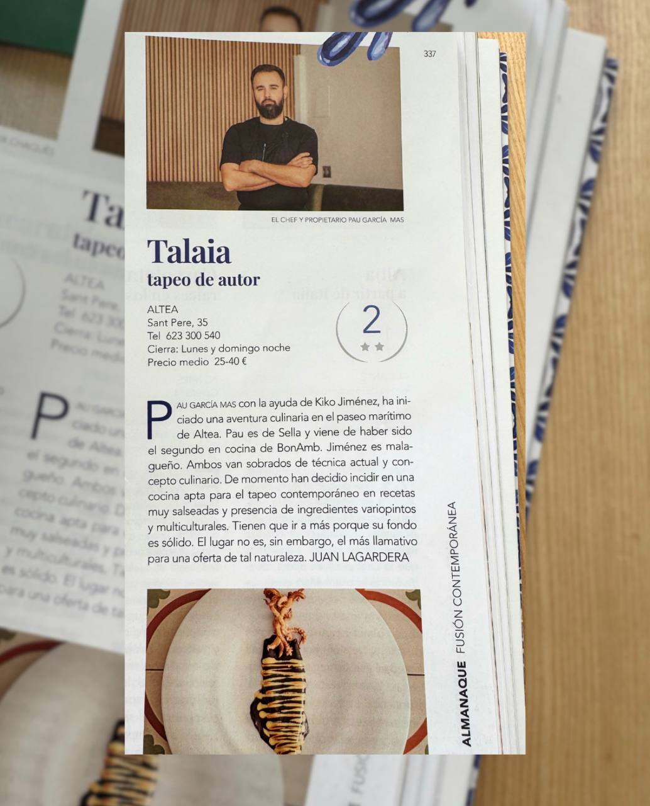

Talaia Espai Mediterrani · Altea
Una aventura
culinaria frente al mar
La historia de dos cocineros, una filosofía y un rincón privilegiado en el paseo marítimo de Altea
Talaia Espai Mediterrani · Altea
La historia de dos cocineros, una filosofía y un rincón privilegiado en el paseo marítimo de Altea

Como nos ven
"Ambos van sobrados de técnica actual y concepto culinario. Tienen que ir a más porque su fondo es sólido."
Juan Lagardera · Guía Almanaque — Fusión Contemporánea
La Guía Almanaque, referencia de la crítica gastronómica en España, dedicó su sección de fusión contemporánea a Talaia desde sus primeros meses de vida. El crítico Juan Lagardera destacó la solidez técnica de Pau García-Más y Kiko Jiménez, su dominio del concepto culinario y el potencial de una propuesta que mezcla tradición alicantina con influencias globales.
Recetas con presencia, ingredientes variopintos y una cocina apta para el tapeo contemporáneo muy salseado. Una valoración que desde entonces no ha hecho más que confirmarse con el respaldo de comensales y guías especializadas.
Nuestra historia
Talaia nació de la decisión de dos cocineros de volver a lo esencial: el producto honesto, el territorio y el placer de compartir una buena mesa.
Pau García-Más, nacido en Sella (Alicante), creció entre los sabores de la Marina Baixa. Formado en algunos de los mejores restaurantes del país, llegó un momento en que sintió que todo ese bagaje debía tener un destino propio, con identidad y sin intermediarios. Ese destino era Altea, el pueblo que lo vio crecer cerca del mar.
En el camino encontró a Kiko Jiménez, cocinero malagueño con recorrido en Ciudad de México y una visión mestiza que encajaba perfectamente con la filosofía que Pau llevaba tiempo madurando. Juntos decidieron abrir en el Carrer Sant Pere, a pasos del puerto pesquero, un espacio donde la alta gastronomía se pusiera al servicio de la informalidad.
No querían un restaurante de mantel largo. Querían un lugar cercano, vivo, donde el comensal pudiera sentir la energía de la cocina y la honestidad del producto sin formalismos. Talaia Espai Mediterrani abrió sus puertas con esa convicción, y desde el primer día la respuesta fue clara: la gente volvía.
Los cocineros
Chef & Propietario
Sella, Alicante — Marina Baixa
Pau creció en Sella, un pequeño pueblo de interior alicantino, con los pies en la tierra y los ojos en el mar. Su formación lo llevó por algunos de los restaurantes más exigentes del panorama gastronómico español y europeo, donde absorbió técnica, rigor y sensibilidad por el producto.
Fue segundo de cocina en BonAmb (dos estrellas Michelin), experiencia que marcó profundamente su comprensión de la excelencia y la precisión. Hoy en Talaia aplica todo ese aprendizaje con una libertad creativa que solo da el proyecto propio.
Trayectoria
Chef
Málaga — Andalucía
Kiko llegó a Altea con las maletas llenas de influencias: el Mediterráneo andaluz de su infancia, las técnicas aprendidas en BonAmb y la cocina mestiza que descubrió durante su etapa en Ciudad de México. Esa mezcla es precisamente lo que aporta a Talaia: una visión sin fronteras que enriquece la propuesta sin perder la raíz.
Sus años en México le abrieron la mirada hacia los fermentados, las especias, los chiles y las combinaciones que hoy aparecen en platos como el aguachile de maíz. Una presencia que convierte a Talaia en algo más que cocina mediterránea: en un diálogo entre culturas.
Trayectoria
Nuestra filosofía
Creemos que la mejor cocina es la que escucha al entorno. La que respeta el calendario, confía en el agricultor y pescador de proximidad, y aplica la técnica solo cuando suma, nunca cuando impone.
Pescadores de Altea, huertanos de la Marina y productores artesanos de la comarca. El territorio en el plato.
La carta cambia con el mercado. Lo que no está en su momento, no está en la mesa. Sin excepciones.
Alta gastronomía aplicada con informalidad. La técnica existe para que el ingrediente brille, no para demostrarse a sí misma.
Reconocimientos
Restaurante recomendado
TripAdvisor 2024
Valoración media máxima
La mejor manera de entender Talaia es sentarse a la mesa.